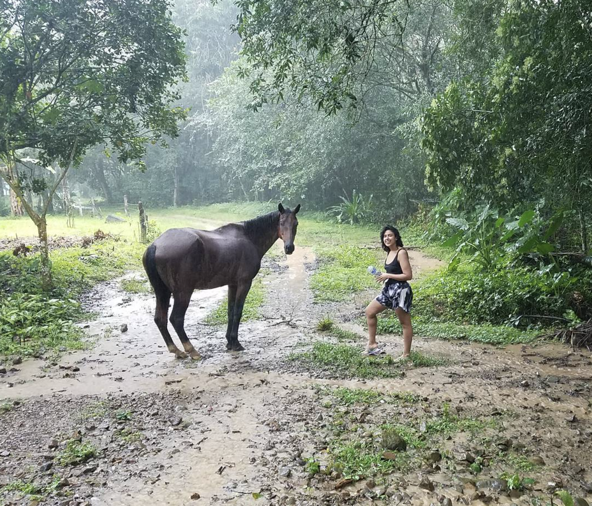

Welcome to Costa Rica!
I've spent the last 10 years moving back and forth between Costa Rica and the states. On my down time from work in Costa Rica I would explore the country with my son. Little by little I have been cataloging different activities that can be done in the country with an emphasis on supporting Costa Rican locals. My goal is to create a "yellow-pages" on things you can do to explore modestly while also helping support local businesses. Feel free to explore what I've cataloged so far.
Camping Adventures
Mountain Camping
Costa Rica